O estacionamento localizado na frente do Campus Anglo da UFPel, entre o prédio principal e a biblioteca. Cada foto é uma visão elevada do pátio inteiro, com os veículos estacionados e as vagas livres visíveis na mesma cena.
Reunir dados reais desse estacionamento para treinar um modelo de detecção capaz de identificar vagas disponíveis a partir de imagens. Detectando os veículos que ocupam o pátio, é possível inferir por diferença quais vagas estão livres.
Pátio de uso intenso, com ocupação que varia bastante ao longo do dia — o que dá variedade natural ao dataset.
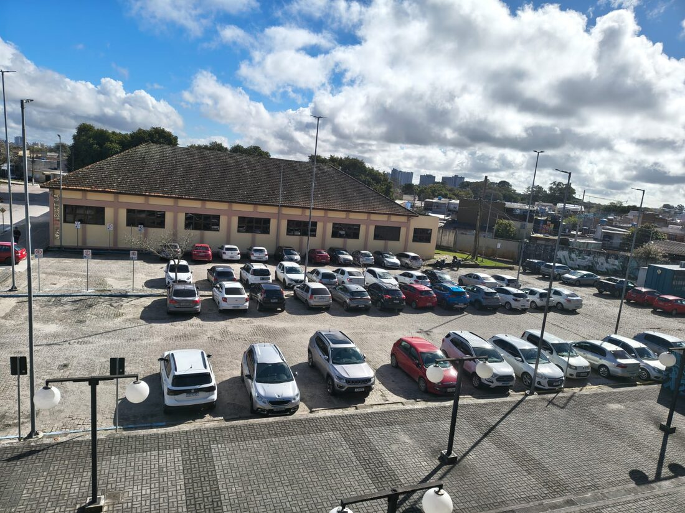
Múltiplos ângulos, climas e câmeras evitam que o modelo aprenda uma única configuração fixa de cena. A diversidade foi buscada de propósito, e não um acaso da coleta.
Reflexo direto dos diferentes aparelhos usados — inclusive uma imagem em orientação retrato.
As imagens foram reunidas via WhatsApp, então o nome e a data de cada arquivo correspondem ao momento do envio, e não necessariamente ao da captura: os metadados EXIF originais foram removidos pelo aplicativo.
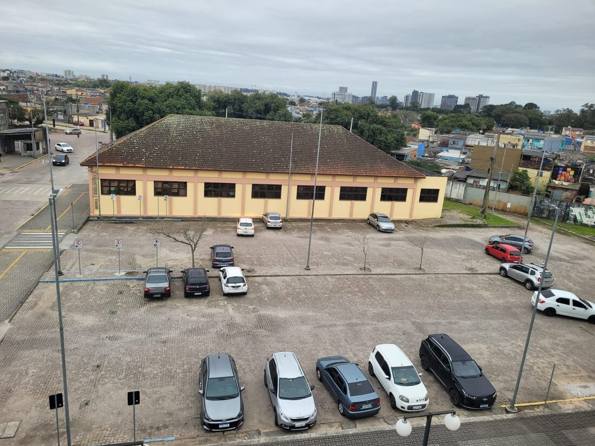
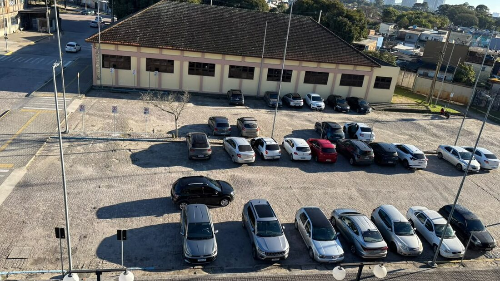
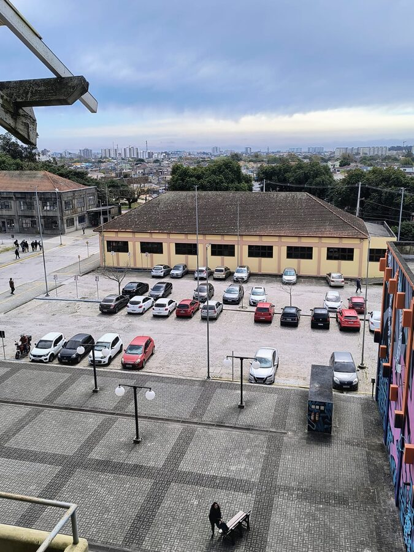
O arquivo obj.names foi criado com quatro rótulos previstos —
carro, suv_picape, moto e vaga_livre. Na prática, separar
carro de suv_picape gerava dúvida em quase toda imagem (a distinção some na
vista de cima) e vaga_livre exigiria demarcar o asfalto vazio, o que fugia do
escopo. Consolidamos a anotação em duas classes efetivas: carro e moto.
A vaga disponível não é anotada diretamente: ela é inferida a partir da ausência de veículo detectado sobre a região da vaga. Anotamos a ocupação, não o vazio.
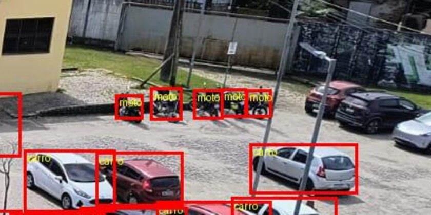
| Classe | Caixas | % | Imagens |
|---|---|---|---|
| carro | 1.087 | 99,1% | 28 |
| moto | 10 | 0,9% | 3 |
| Total | 1.097 | 100% | 28 |
Para cada moto anotada há cerca de 109 carros. É a principal limitação atual do dataset: um modelo treinado assim tende a detectar carros bem e motos mal.
.txt por imagem, com
o mesmo nome-base da imagem, mais o obj.names com a lista de classes..txt vazio; no nosso
caso todas as 28 imagens anotadas contêm veículos..txt# <classe> <x_centro> <y_centro> <largura> <altura> 0 0.784062 0.581667 0.048125 0.043333 0 0.828125 0.584583 0.046250 0.049167 0 0.739062 0.547500 0.040625 0.030000 2 0.772500 0.370000 0.016250 0.020000 ...
obj.names — índice de cada classe0 carro ← classe usada 1 suv_picape ← prevista, não utilizada 2 moto ← classe usada 3 vaga_livre ← prevista, não utilizada
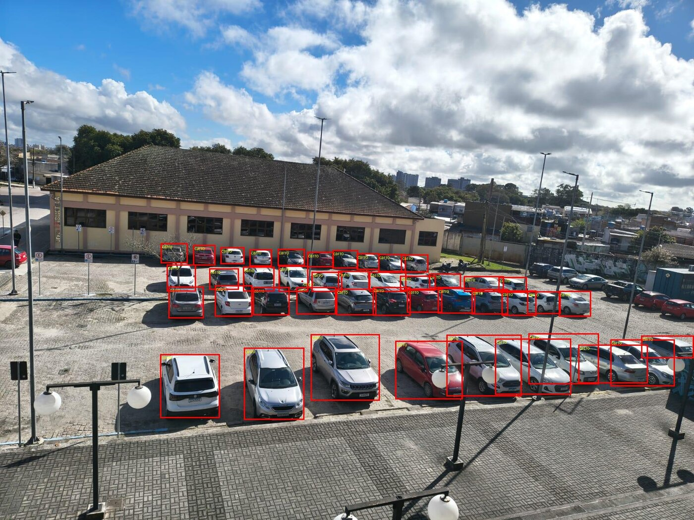
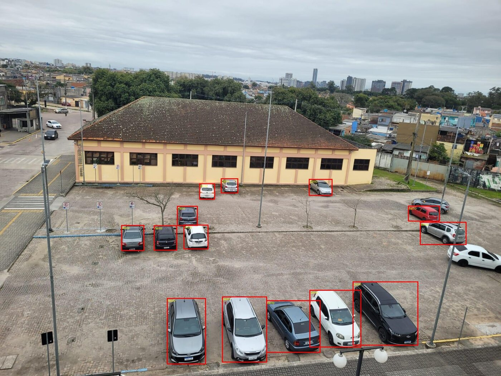
Anotar todo veículo estacionado dentro do estacionamento-alvo. Se está parado ocupando uma posição do pátio, vira caixa. Caso contrário, não.
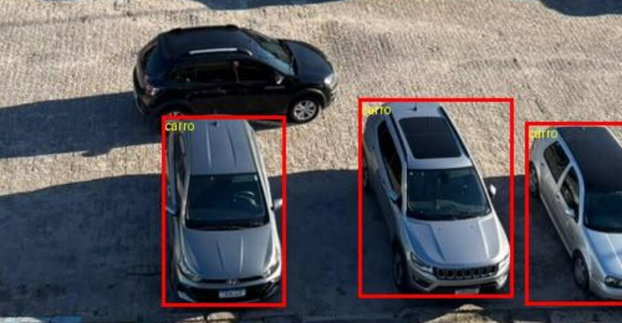
O objetivo do dataset é ocupação de vaga, não detecção genérica de veículos. Anotar carros na rua ensinaria o modelo a contar veículos que não têm relação com a disponibilidade do estacionamento.
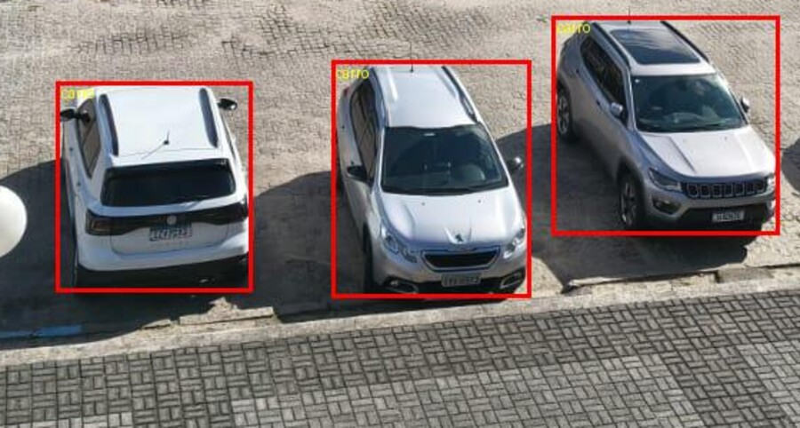
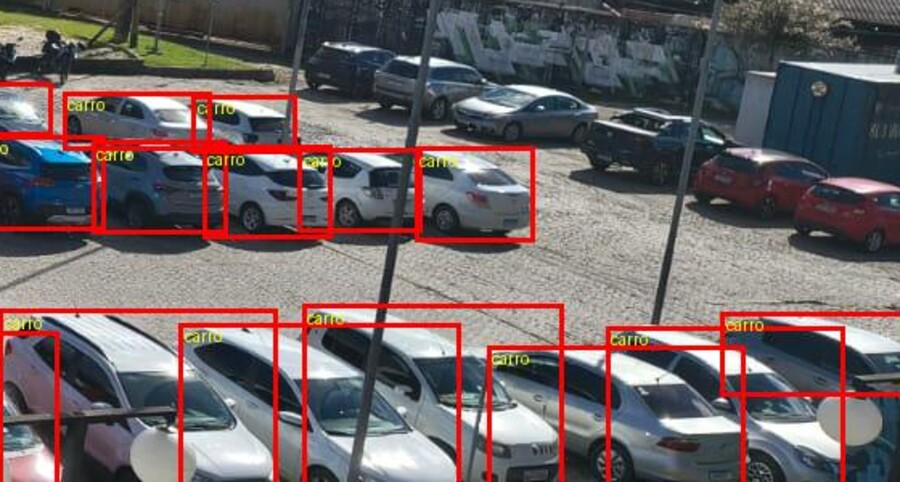
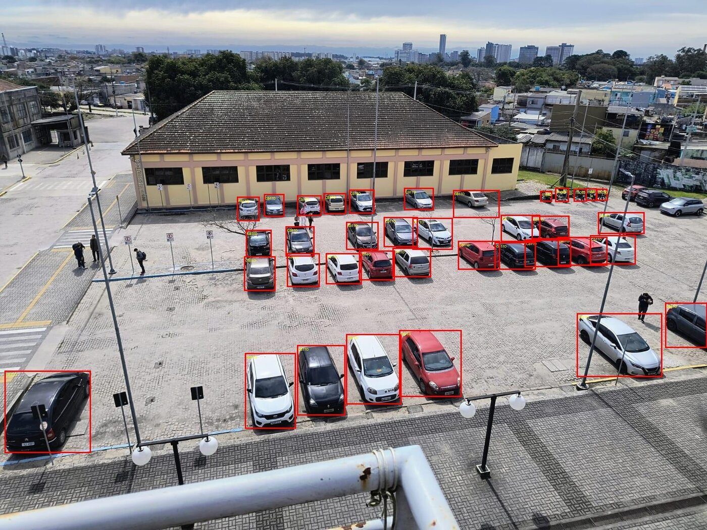
preview/ — para flagrar caixas soltas ou veículos esquecidos.Os carros à direita aparecem inclinados e escondidos atrás uns dos outros; definir onde termina um e começa o outro foi a dúvida mais frequente.
Nas fileiras distantes cada carro ocupa poucos pixels: um erro de poucos pixels vira uma variação grande em proporção.
Veículos parados na borda do pátio, junto à rua ou ao estacionamento vizinho, exigiram decidir caso a caso se estavam no recorte de interesse.
Postes, placas, árvores e o guarda-corpo do prédio cortam veículos ao meio, dividindo visualmente um mesmo carro.
tec-viii/ ├── dataset/ # 30 imagens originais (.jpeg) │ ├── WhatsApp Image ... 08.27.30.jpeg │ └── ... ├── annotations/ # 28 rótulos YOLO (.txt) │ ├── obj.names # lista de classes │ ├── WhatsApp Image ... 08.27.30.txt │ └── ... └── preview/ # 28 imagens com as boxes (.jpg) ├── WhatsApp Image ... 08.27.30_bbox.jpg └── ...
O pareamento é feito pelo nome-base do arquivo: a imagem
<nome>.jpeg, seu rótulo <nome>.txt e a conferência
visual <nome>_bbox.jpg. A classe de cada objeto não está no nome do
arquivo, e sim no índice numérico da primeira coluna do .txt,
resolvido pelo obj.names.
As fotos originais, sem edição, corte ou redimensionamento — exatamente como saíram das câmeras.
Exportação YOLO 1.1 do CVAT: um .txt por imagem mais
o obj.names. É a pasta consumida no treino.
Imagens com as caixas desenhadas sobre a foto. Não entram no treino: servem para conferência visual.
preview/ como etapa obrigatória de revisão antes de
considerar uma imagem concluída.Dataset de ocupação de vagas — Estacionamento do Campus Anglo